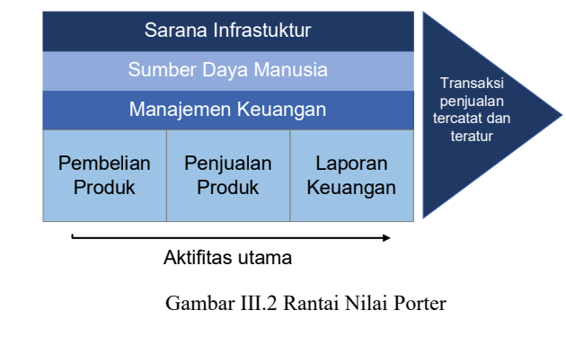
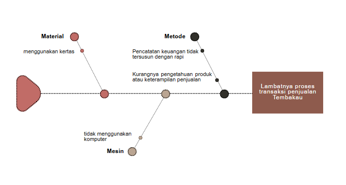
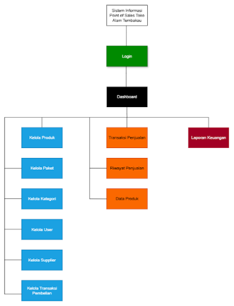
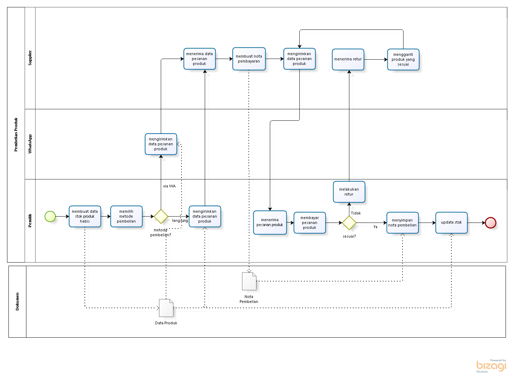
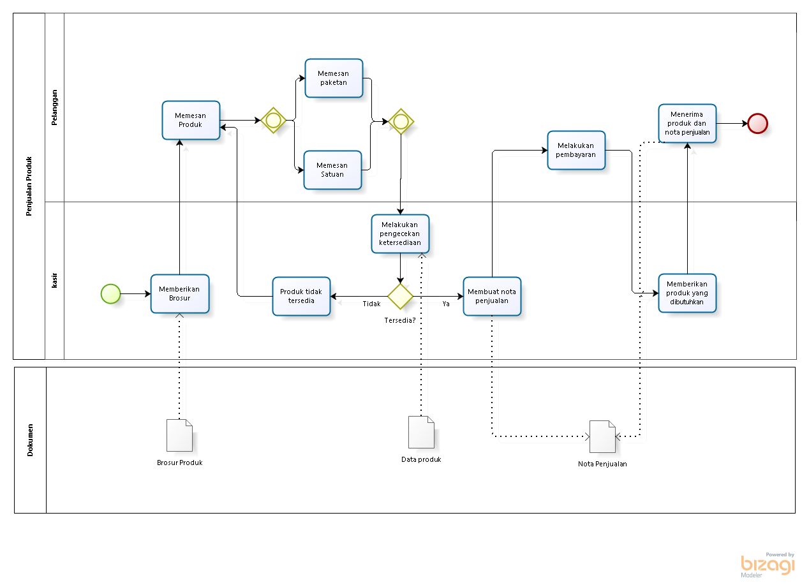
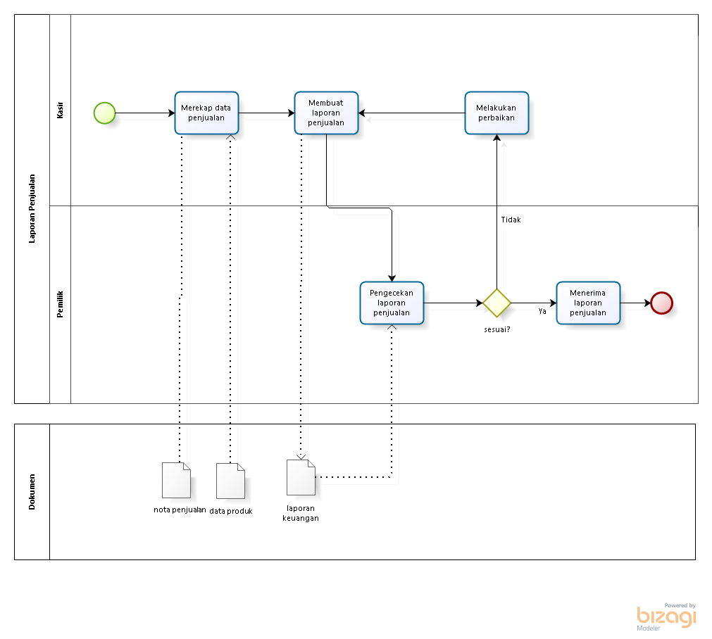
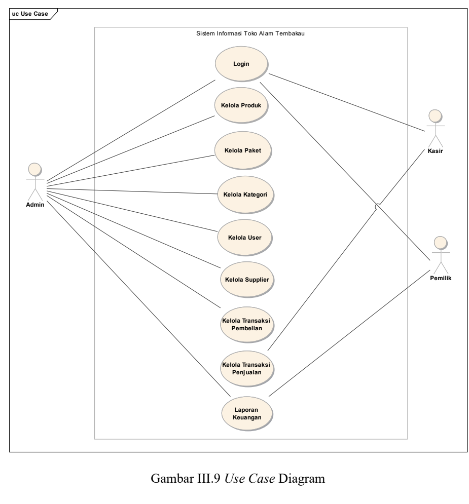
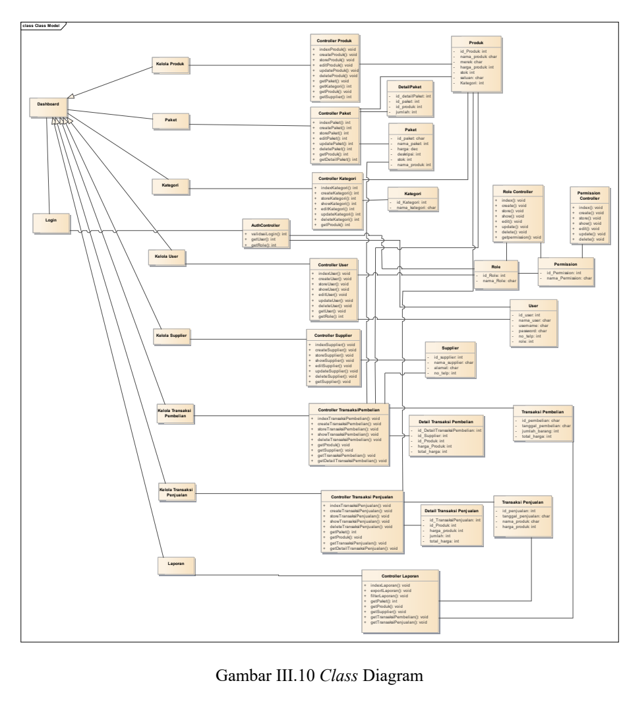

Analisis Rantai Nilai Porter
Pemetaan aktivitas utama dan aktivitas pendukung yang membentuk nilai pada
proses bisnis SIPOSTAM.
Toko Alam Tembakau melayani transaksi penjualan produk tembakau olahan, rokok, cengkeh, papir, dan aksesoris lainnya. Sebelumnya, seluruh aktivitas transaksi dicatat secara konvensional pada nota kertas manual dan buku kas harian.
Perhitungan total belanja menggunakan kalkulator fisik rawan salah hitung saat jam sibuk toko, memperlambat pelayanan kasir.
Tidak adanya kartu stok otomatis mengakibatkan jumlah fisik barang di etalase kerap berbeda dengan catatan buku.
Pemilik toko harus menghitung nota fisik satu per satu setiap malam untuk mengetahui total omset kotor dan laba bersih harian.
Pengembangan proyek dilakukan menggunakan metodologi Agile Scrum melalui tahapan sprint planning, perumusan user stories, dan evaluasi sprint review bersama pemilik toko untuk memastikan kebutuhan transaksi kasir terpenuhi dengan optimal.



| Peran Pengguna | Wewenang & Tanggung Jawab dalam Sistem | Tingkat Akses |
|---|---|---|
| Pemilik Toko (Owner / Admin) | Melihat dashboard pendapatan real-time, laporan laba/rugi, kelola master produk & harga, transaksi pembelian supplier, dan manajemen akun kasir. | Full Access & Analytics |
| Kasir Toko | Melakukan input transaksi belanja cepat, cetak struk nota, cek ketersediaan stok produk, dan rekap penutupan kasir shift harian. | POS Kasir & Struk |
Merancang alur proses transaksi POS di mana setiap kali kasir menyelesaikan transaksi pembayaran dan mencetak struk belanja, kuantitas stok barang di database otomatis terpotong sesuai unit yang dibeli (stock movement).



Merancang pemodelan Use Case Diagram untuk interaksi peran Kasir dan Owner, serta skema basis data relasional yang menghubungkan tabel produk, kategori, stok, supplier, transaksi penjualan, dan detail nota.


Berikut adalah tangkapan layar antarmuka sistem nyata SIPOSTAM yang telah diuji dan dioperasikan pada Toko Alam Tembakau:
Menjamin keandalan fungsionalitas aplikasi kasir POS, sinkronisasi stok otomatis, dan akurasi laporan laba kotor menggunakan teknik Black Box Testing menyeluruh pada 9 skenario use case utama (Tabel 6.1 s/d Tabel 6.10) sesuai Dokumen Perancangan Perangkat Lunak (DPPL).
| ID Test Case | Use Case Diuji | Prosedur & Skenario Black Box | Keluaran yang Diharapkan | Status QA |
|---|---|---|---|---|
PDHUPL-1.a & 1.e |
Validasi Login | Uji login dengan input kosong, kredensial tidak valid, dan kredensial valid (Kasir & Owner). | Muncul pesan kesalahan pada data tidak valid; berhasil login dan redirect ke dasbor pada akun valid. | ✓ Diterima / Lolos |
PDHUPL-2.a & 2.c |
Kelola User | Uji penambahan akun kasir baru, update data profil, dan penghapusan akun. | Sistem menampilkan pesan sukses, data pengguna baru tersimpan dan terenkripsi pada database. | ✓ Diterima / Lolos |
PDHUPL-3.c |
Kelola Supplier | Insert data pemasok tembakau dengan format lengkap dan valid. | Muncul notifikasi berhasil, daftar vendor/supplier terdaftar pada master data. | ✓ Diterima / Lolos |
PDHUPL-4.a & 4.c |
Kelola Produk & Stok | Input produk baru dengan semua field kosong vs data lengkap dan valid. | Form validasi memblokir input kosong; produk baru tersimpan lengkap dengan harga modal dan jual. | ✓ Diterima / Lolos |
PDHUPL-6.a & 6.c |
Kelola Kategori | Tambah kategori rokok/tembakau dan update data klasifikasi barang. | Kategori berhasil ditambahkan dan langsung terhubung dengan katalog produk kasir. | ✓ Diterima / Lolos |
PDHUPL-7.b & 7.e |
Transaksi Pembelian | Input transaksi faktur pembelian produk dari supplier dan verifikasi fungsi form. | Data faktur tersimpan, pengeluaran modal tercatat, dan stok barang bertambah secara otomatis. | ✓ Diterima / Lolos |
PDHUPL-8.a & 8.c |
Transaksi Penjualan (Kasir) | Input transaksi kasir cepat, kalkulasi total belanja & kembalian, dan cetak struk nota. | Transaksi terekam akurat, struk thermal tercetak rapi, dan mutasi stok berkurang seketika. | ✓ Diterima / Lolos |
PDHUPL-9.a & 9.c |
Laporan Keuangan | Generate laporan rekapitulasi transaksi omset penjualan dan filter periode tanggal. | Laporan tergenerate dengan perhitungan laba kotor, total omset, dan modal beli akurat 100%. | ✓ Diterima / Lolos |
Implementasi SIPOSTAM berhasil mentransformasi tata kelola operasional Toko Alam Tembakau menjadi lebih cepat, akurat, dan menguntungkan.
Pelayanan kasir berlangsung kurang dari 15 detik per transaksi dengan nota struk digital tercetak rapi.
Mengeliminasi selisih stok fisik tembakau di gudang berkat pencatatan mutasi masuk dan keluar yang tersinkronisasi otomatis.
Pemilik toko dapat memantau perputaran omset harian kapan saja tanpa perlu merekap nota manual pada malam hari.